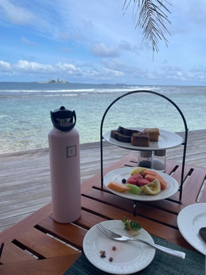
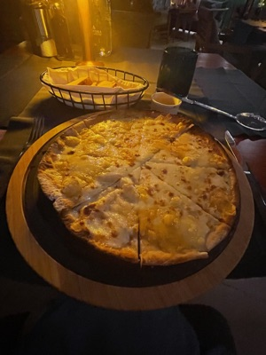
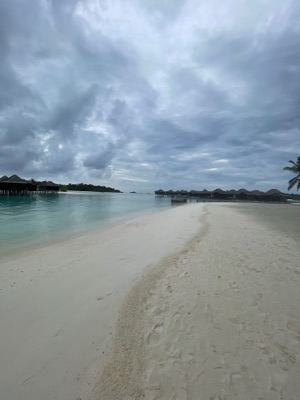

An adults-only overwater-villa resort in South Malé Atoll, connected by pontoon and bridge to two sister properties — Anantara Dhigu and Naladhu Private Island — for expanded dining and activities without ever leaving the lagoon. It's an all-inclusive resort, and standard practice is GF meals at no extra charge across all restaurants with advance notice (an email 14 days pre-arrival is recommended). Cumin explicitly advertises GF and dairy-free options on the official resort site.
"I have celiac disease and cannot eat gluten or wheat"Works well spoken directly to staff
English is the primary language used at resorts across the Maldives. Dhivehi is the national language, but resort staff communicate with guests in English day to day, so there's no local-language card needed here — be upfront and direct about celiac disease and cross-contact.
Hidden Gluten Traps
Standard soy sauce contains wheat — ask for tamari or coconut aminos instead
Curry pastes and powders are sometimes thickened with wheat flour
Oyster sauce and hoisin sauce both contain wheat
Cross-contact on shared woks is common in Asian-fusion resort kitchens
Safe Cuisines
Mas Riha — coconut fish curry, rice-based (verify no wheat-flour thickener)
Garudhiya — clear fish broth with onion, chili and lime, naturally GF
Fihunu Mas — grilled reef fish with local spices and coconut
Mas Huni (tuna, coconut, onion, lime) is traditionally served with roshi, a wheat flatbread — ask for rice or a GF alternative instead
Grocery / Shops
N/A — all dining is through the resort's all-inclusive restaurants. This is a private island resort, not a city with shops.
Certification to Look For
No formal Maldives celiac association or GF certification body exists. GF awareness here is concentrated at the luxury-resort level rather than a nationwide standard — always confirm directly with the kitchen rather than relying on menu labeling alone.
Score Breakdown
"Density" and "grocery" are reinterpreted here for a private resort-island context rather than a typical city.
Dedicated GF restaurants
Menu labeling
Staff knowledge & safety
Density of GF dining
Grocery availability
8/10Overall GF Score
Easy
GF Friendly Restaurants
4 spots
5/5 4/5 Hotel
Cumin
GF Options
Sri Lankan / Indian · Breakfast & Dinner
Went here
GF Score
Safety Notes
Took gluten allergies very seriously — the chef made a custom selection of GF breads and pastries just for me, including banana bread and coffee cake. Officially advertises GF and dairy-free options.
What to Order
Ask for the chef's custom GF breakfast pastry selection.
Hours
Breakfast 7–11am · Dinner 6:30–10pm
Location
Anantara Veli Maldives Resort

Aqua Bar
GF Options
Italian · Pizza, Pasta & Seafood
Went here
GF Score
Safety Notes
Wonderful GF pizza for dinner and GF pasta for lunch. Staff are amazing and so friendly.
What to Order
GF pizza (dinner), GF pasta (lunch).
Location
Anantara Dhigu — reachable via the connecting pontoon/bridge from Anantara Veli

Dhoni Bar
GF Options
Poolside Bar · Mediterranean Tapas & Seafood
Went here
GF Score
Safety Notes
Tons of GF options, especially fresh seafood.
What to Order
Fresh seafood tapas.
Location
Anantara Veli Maldives Resort — poolside

Baan Huraa
GF Options
Thai · Overwater Dining Pavilion
Went here
GF Score
Safety Notes
Had a few gluten-free options — the kitchen even made a GF version of prawn crackers (texture was a bit like styrofoam, but the effort was appreciated). Pad Thai was delicious.
What to Order
Pad Thai (GF-adapted).
Hours
Dinner only, 6:30–10pm · Reservation required
Location
Anantara Veli Maldives Resort — overwater pavilion
Getting Around
Speedboat Transfer
The only way to reach Anantara Veli from Velana International Airport (Malé). South Malé Atoll is close enough to the airport that resorts here use speedboats rather than the seaplanes required for far-flung atolls.
~30–90 min, depending on the exact resort
Best for: Airport arrivals & departures
Walking
The island is compact enough to walk between villas, the four restaurants, and the beach in just a few minutes.
Best for: Getting around the main island
Pontoon & Bridge
Movement between Anantara Veli and its sister islands — Anantara Dhigu and Naladhu Private Island — is by pontoon boat, walking bridge, or buggy path, not independent city-style transit.
Best for: Reaching sister-property restaurants like Aqua Bar
Local Tip
This is a single resort complex, not a city — once you've arrived by speedboat, everything (villas, restaurants, sister properties) is reachable on foot, by pontoon, or via the connecting bridge.
Landmarks & Must-See Spots
2 spots
The Connecting Bridge & Pontoon
Resort Feature
Anantara Veli is linked to sister resort Anantara Dhigu by a 1-minute pontoon ride, and to the ultra-luxury Naladhu Private Island by a wooden bridge and buggy path. Guests can walk or ride between all three islands' restaurants and leisure facilities without ever needing a separate boat transfer mid-stay.
Connecting Anantara Veli, Anantara Dhigu & Naladhu Private Island
Went here
The Overwater Villas & Lagoon
Resort Feature
The resort's signature setting — villas built directly over the lagoon with direct water access, connected by wooden boardwalks. It's the postcard image of Anantara Veli, and the calm, shallow lagoon water makes it easy to slip in for a swim straight from your villa deck.
Anantara Veli Maldives Resort
Went here
Things to Do
Water Activities
Nurse Shark Snorkeling Experience
Paid
A guided snorkeling trip out to spots where nurse sharks, pink whiprays, and trevallies gather in 5–10m depths — suitable for all skill levels, including first-time snorkelers.
A 4-hour cruise combining reef snorkeling, a picnic stop on a private sandbank, and sunset views from the water — a relaxed way to see more of the atoll beyond the resort's own house reef.
A 3-hour cruise pairing dolphin-watching with reef snorkeling — a shorter option than the sandbank cruise if you'd rather keep more of the day free for the resort itself.
Email the resort about celiac/GF needs at least 14 days before arrival — request a dedicated GF toaster and colander if you're sensitive to cross-contact, and follow up verbally with each restaurant's team on arrival.
July falls in the Maldives' southwest monsoon season (May–November) — expect short afternoon showers followed by sunshine, warm water (28–30°C) throughout, and significantly better resort rates and fewer crowds than the December–April dry season. Good trade-off for value, not ideal if calm seas for every single day are the top priority.
The connecting bridge/pontoon to Anantara Dhigu means you effectively have 2–3 islands' worth of restaurants to rotate through without ever leaving the resort complex — worth exploring Aqua Bar on Dhigu even though it's a short hop from Veli itself.
Hidden gluten trap to watch for even at a GF-attentive resort: standard soy sauce (used across Asian-inspired dishes) contains wheat — ask for tamari or coconut aminos as a swap.
What I'd Do Differently
Honestly, not much — with an all-inclusive resort this GF-accommodating, there wasn't a lot to improve. If anything, emailing ahead of time rather than only asking in person would have saved a little back-and-forth on day one.
Have a tip or comment?
Found a great GF spot in South Malé Atoll? I'd love to hear from you.